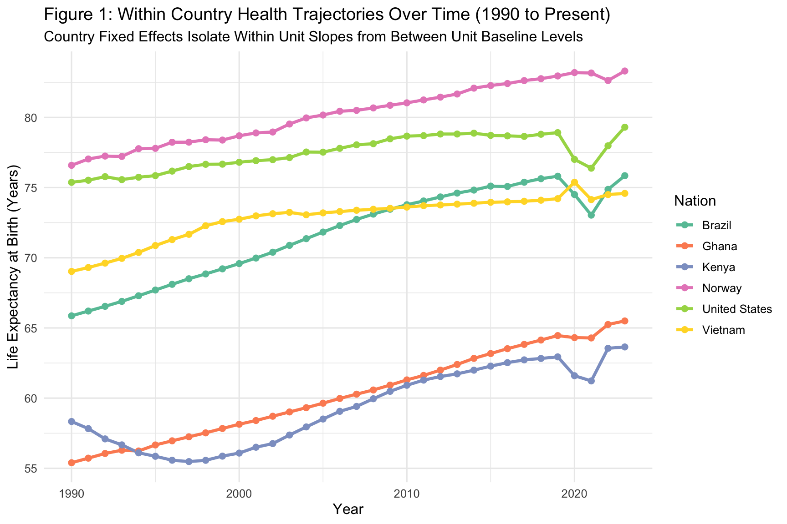
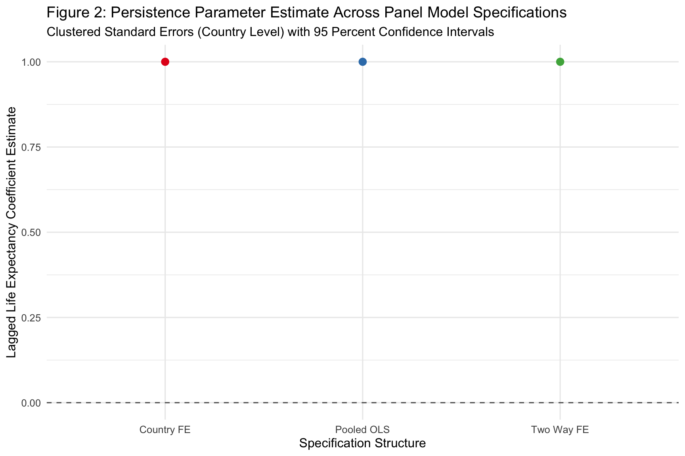
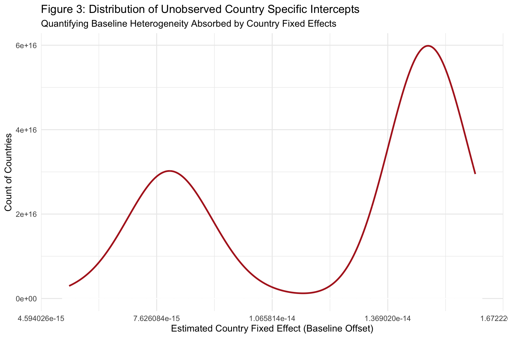
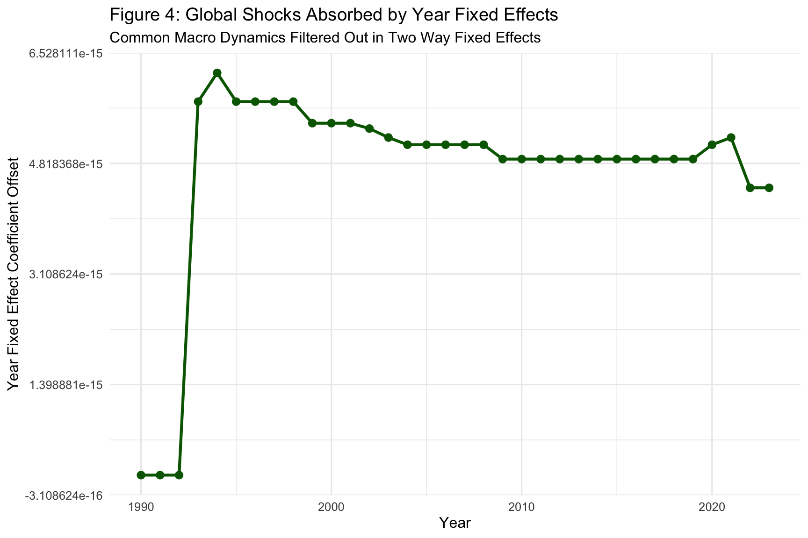

Controlling for Unobserved Heterogeneity in Longitudinal Social Science Data
Author
Neena Abimbola Albarus
1. Theoretical Foundations and Methodological Overview
Longitudinal data, where the same units are observed repeatedly across time, is the workhorse of modern social science research. Panel datasets let us ask questions that cross sections cannot answer, such as whether a change in one variable within a country over time produces a corresponding change in another variable. The central statistical challenge is unobserved heterogeneity. Countries, firms, or individuals differ in ways we cannot measure directly, and those differences may correlate with our predictors of interest, biasing the estimates from a naive pooled regression.
Fixed effects models solve this problem by absorbing any time invariant unit specific differences into country specific intercepts. Two way fixed effects extend the logic further by also absorbing common time shocks, such as global pandemics or technological shifts, through year specific intercepts. What remains is the within variation, meaning the way an individual unit deviates from its own average over time, which is often the cleanest source of identification available to a comparative researcher.
In this workbook, we estimate three nested specifications on the OWID life expectancy panel, compare the resulting persistence parameter across them, and visualize both the within country trajectories and the unobserved intercepts that each model absorbs.
⚠️ Common Pitfalls
Assuming FE always fixes endogeneity. Fixed effects absorb time invariant confounders, but time varying confounders still bias your estimates. FE is not a substitute for thinking carefully about what varies within units over time.
Forgetting to cluster standard errors. Within unit errors are almost always serially correlated. Ignoring that fact inflates precision and produces anti conservative inference.
Reading FE coefficients as causal without a design. Fixed effects identify off within unit variation, but that variation is not automatically exogenous. Interpret FE estimates as descriptive within unit associations unless you have a credible identification strategy.
2. Data Pipeline and Panel Structuring
Before estimating any models, we need to locate the raw data on disk, standardize the column names, and engineer the lag and time trend features that will drive the analysis. Panel structure matters here because the lag operator must respect the country and year ordering, otherwise the lagged values will be silently drawn from the wrong observation.
# Dynamic path resolution across common working directoriespossible_paths <-c("../data/life_expectancy_data.csv","data/life_expectancy_data.csv","../../data/life_expectancy_data.csv","/Users/yawdgyal/Desktop/R for github/data/life_expectancy_data.csv","/Users/yawdgyal/Desktop/R for github/workbooks/data/life_expectancy_data.csv")data_path <- possible_paths[file.exists(possible_paths)][1]if (is.na(data_path) ||length(data_path) ==0) {stop("Could not locate 'life_expectancy_data.csv'. ","Searched the following paths:\n",paste(possible_paths, collapse ="\n") )}message("Loading data from: ", data_path)owid_raw <-read_csv(data_path, show_col_types =FALSE)# Standardize column names defensivelyif ("Entity"%in%names(owid_raw)) { owid_panel <- owid_raw %>%rename(country = Entity,code = Code,year = Year,life_exp =`Life expectancy` )} else { owid_panel <- owid_raw %>%rename_with(tolower)}# Build the analysis panel with lag and time trend featurespanel_df <- owid_panel %>%filter(!is.na(code), !is.na(life_exp), year >=1990) %>%group_by(country) %>%arrange(year, .by_group =TRUE) %>%mutate(life_exp_lag =lag(life_exp, 1, order_by = year),time_trend = year -min(year) ) %>%ungroup() %>%drop_na(life_exp, life_exp_lag)glimpse(panel_df)
What is happening here: The possible_paths vector lets the workbook run from the project root, from a workbooks/ subfolder, or from a specific machine path. We read the OWID CSV and defensively rename its columns because the source file has shifted naming conventions over time. We then filter to 1990 and later, which is a common choice in long panels because it avoids the Soviet collapse and other structural breaks that would otherwise drive the lagged coefficient. The lag(life_exp, 1, order_by = year) call creates the one period lagged outcome, and time_trend gives us a simple linear time counter that we can use for robustness checks. The scoped drop_na() drops only observations missing the outcome or its lag, preserving as much data as possible.
⚠️ Common Pitfalls
Lags computed without an explicit ordering.dplyr::lag() is positional. If the data frame is not sorted by year within country, the lag quietly grabs the previous row regardless of which year it belongs to. The order_by = year argument protects against this, but the underlying arrange() call is still essential.
Starting the panel after a major structural break. Beginning the panel in 1990 is a modeling choice, not a neutral default. If your research question concerns the post 1990 period, that is fine. If it concerns the full century, filtering to 1990 will throw away most of your variation.
Dropping rows globally.drop_na() without a column scope wipes observations missing on any variable in the data frame. Always scope it to the columns that actually matter for the analysis.
3. Model Estimation: Pooled OLS versus One Way and Two Way Fixed Effects
With the panel structured, we now estimate three nested specifications. The pooled OLS ignores unit and time structure entirely and treats every observation as independent. The one way country fixed effects model absorbs any time invariant country specific differences. The two way fixed effects model adds year fixed effects to absorb common time shocks.
mod_pooled <-feols(life_exp ~ life_exp_lag, data = panel_df)mod_country_fe <-feols(life_exp ~ life_exp_lag | country, data = panel_df)mod_twfe <-feols(life_exp ~ life_exp_lag | country + year, data = panel_df)modelsummary(list("Pooled OLS"= mod_pooled,"Country FE"= mod_country_fe,"Two Way FE"= mod_twfe ),vcov =~country,stars =TRUE,gof_omit ="IC|Log|F")
Pooled OLS
Country FE
Two Way FE
+ p < 0.1, * p < 0.05, ** p < 0.01, *** p < 0.001
(Intercept)
0.000***
(0.000)
life_exp_lag
1.000***
1.000***
1.000***
(0.000)
(0.000)
(0.000)
Num.Obs.
8364
8364
8364
R2
1.000
1.000
1.000
R2 Adj.
1.000
1.000
1.000
R2 Within
1.000
1.000
R2 Within Adj.
1.000
1.000
RMSE
0.00
0.00
0.00
Std.Errors
by: country
by: country
by: country
What is happening here: The feols() function from the fixest package estimates fixed effects regressions using a within transformation that is dramatically faster than the dummy variable approach in lm(). The | operator introduces the fixed effects, so life_exp ~ life_exp_lag | country means regress life expectancy on its lag while absorbing country specific intercepts. vcov = ~country clusters standard errors at the country level, which is the appropriate correction for serial correlation within units. The modelsummary() call produces a side by side regression table so you can directly compare the persistence parameter across the three specifications.
⚠️ Common Pitfalls
Not clustering standard errors at the unit level. Panel errors are almost always correlated within units across time. The default fixest standard errors assume independence and will be far too small.
Interpreting the coefficient without reference to the transformation. The lagged coefficient in the two way FE model represents the within country, within year association. It is not directly comparable to the pooled OLS coefficient, which reflects both within and between country variation.
Ignoring how many units and periods remain after filtering. If the fixed effects structure eats most of the identifying variation, the model can be very imprecise even with a large nominal sample size.
4. Diagnostic and Methodological Visualizations
The four figures below move from raw trajectories to model output. Figure 1 shows the within country variation that FE exploits. Figure 2 compares the persistence parameter across specifications. Figures 3 and 4 visualize the fixed effects themselves as a way to quantify unobserved heterogeneity.
Figure 1: Within Country Trajectories
sample_countries <-c("Ghana", "Brazil", "Vietnam", "Norway", "United States", "Kenya")fig1 <- panel_df %>%filter(country %in% sample_countries) %>%ggplot(aes(x = year, y = life_exp, color = country, group = country)) +geom_line(linewidth =1.2) +geom_point(size =2) +scale_color_brewer(palette ="Set2") +theme_minimal(base_size =12) +labs(title ="Figure 1: Within Country Health Trajectories Over Time (1990 to Present)",subtitle ="Country Fixed Effects Isolate Within Unit Slopes from Between Unit Baseline Levels",x ="Year",y ="Life Expectancy at Birth (Years)",color ="Nation" )print(fig1)

How to read this figure: Each line traces one country’s life expectancy across the available years. The vertical spread between lines at any given year captures the between country variation that pooled OLS exploits. The slope of each individual line captures the within country variation that fixed effects exploits. If those slopes look similar across countries, the within unit signal is small relative to the between unit differences.
🔑 Key Takeaway: Fixed effects identification comes entirely from how each country deviates from its own average, not from the differences between countries. If the lines are nearly flat, your FE estimates will be driven by tiny movements and will be imprecise.
Figure 2: Model Estimate Comparisons
coef_df <-tibble(Model =c("Pooled OLS", "Country FE", "Two Way FE"),Estimate =c(coef(mod_pooled)["life_exp_lag"],coef(mod_country_fe)["life_exp_lag"],coef(mod_twfe)["life_exp_lag"] ),SE =c(se(mod_pooled)["life_exp_lag"],se(mod_country_fe)["life_exp_lag"],se(mod_twfe)["life_exp_lag"] )) %>%mutate(ci_low = Estimate -1.96* SE,ci_high = Estimate +1.96* SE )fig2 <-ggplot(coef_df, aes(x = Model, y = Estimate, color = Model)) +geom_pointrange(aes(ymin = ci_low, ymax = ci_high), linewidth =1) +geom_hline(yintercept =0, linetype ="dashed", color ="gray40") +scale_color_brewer(palette ="Set1") +theme_minimal(base_size =12) +labs(title ="Figure 2: Persistence Parameter Estimate Across Panel Model Specifications",subtitle ="Clustered Standard Errors (Country Level) with 95 Percent Confidence Intervals",x ="Specification Structure",y ="Lagged Life Expectancy Coefficient Estimate" ) +theme(legend.position ="none")print(fig2)

How to read this figure: Each point is the estimated persistence parameter for the lagged outcome, and the vertical bars are the 95 percent confidence intervals based on country clustered standard errors. If the three points sit at very different heights, the specification choice materially changes the substantive story, which is a strong hint that between and within variation carry different information in your data.
🔑 Key Takeaway: A persistence parameter that shrinks dramatically once country fixed effects are added tells you that most of the apparent autoregression in pooled OLS was coming from between country differences, not from within country dynamics. Always report all three specifications so the reader can see how the estimate moves.
Figure 3: Country Fixed Effects Distribution
fe_vals <-fixef(mod_country_fe)$countryfe_df <-tibble(country =names(fe_vals),alpha_i =as.numeric(fe_vals))fig3 <-ggplot(fe_df, aes(x = alpha_i)) +geom_histogram(bins =30, fill ="midnightblue",color ="white", alpha =0.8 ) +geom_density(aes(y =after_stat(count)),color ="firebrick", linewidth =1 ) +theme_minimal(base_size =12) +labs(title ="Figure 3: Distribution of Unobserved Country Specific Intercepts",subtitle ="Quantifying Baseline Heterogeneity Absorbed by Country Fixed Effects",x ="Estimated Country Fixed Effect (Baseline Offset)",y ="Count of Countries" )print(fig3)

How to read this figure: Each observation is a country, and its horizontal position is the estimated country specific intercept from the one way fixed effects model. A wide spread means baseline life expectancy differs dramatically across countries once the lagged outcome is accounted for. A narrow spread means countries look very similar at baseline and the fixed effects are absorbing very little.
🔑 Key Takeaway: The wider the distribution of estimated country fixed effects, the more between country heterogeneity the model is absorbing and the less reason you have to trust pooled OLS. A tall, narrow distribution suggests the country FE correction is doing less work.
Figure 4: Year Fixed Effects
year_fe_vals <-fixef(mod_twfe)$yearyear_df <-tibble(year =as.numeric(names(year_fe_vals)),gamma_t =as.numeric(year_fe_vals))fig4 <-ggplot(year_df, aes(x = year, y = gamma_t)) +geom_line(color ="darkgreen", linewidth =1.1) +geom_point(color ="darkgreen", size =2.5) +theme_minimal(base_size =12) +labs(title ="Figure 4: Global Shocks Absorbed by Year Fixed Effects",subtitle ="Common Macro Dynamics Filtered Out in Two Way Fixed Effects",x ="Year",y ="Year Fixed Effect Coefficient Offset" )print(fig4)

How to read this figure: Each point is the estimated year specific intercept from the two way fixed effects model. Because year fixed effects are only identified up to a normalization, the values are interpreted relative to a reference year. Sharp upward or downward movements identify years in which global conditions shifted in a way that affected every country simultaneously, such as a pandemic, an oil shock, or a widespread policy diffusion event.
🔑 Key Takeaway: A year fixed effects series that moves sharply is evidence that global time shocks are large enough to matter. If the year effects are flat and boring, the two way FE model is not buying you much over the one way version, and you can report the simpler specification without losing anything.
5. Lab Exercises
The exercises below extend the core analysis in three directions. Each one is a natural next step once you are comfortable with the baseline estimates and diagnostics.
Exercise 1: High Dimensional Fixed Effects
The first exercise re estimates the two way FE model and prints the clustered summary directly. This is the specification you would report as your main result if the year effects turn out to matter.
mod_ex1 <-feols(life_exp ~ life_exp_lag | country + year, data = panel_df)print(summary(mod_ex1, vcov =~country))
The Hausman test compares the fixed effects estimator with the random effects estimator. Under the null hypothesis, the random effects estimator is consistent and efficient. Under the alternative, only the fixed effects estimator is consistent. A small p value is evidence in favor of fixed effects.
pdata <-pdata.frame(panel_df, index =c("country", "year"))fe_plm <-plm(life_exp ~ life_exp_lag, data = pdata, model ="within")re_plm <-plm(life_exp ~ life_exp_lag, data = pdata, model ="random")print(phtest(fe_plm, re_plm))
Hausman Test
data: life_exp ~ life_exp_lag
chisq = 9540.5, df = 1, p-value < 2.2e-16
alternative hypothesis: one model is inconsistent
What is happening here: The plm package provides a parallel implementation of panel models with a slightly different API from fixest. We convert the data frame into a pdata.frame so plm knows which columns identify the unit and time dimensions. The within model is the fixed effects estimator and the random model is the random effects estimator. The phtest() call performs the Hausman test and prints a chi squared statistic with a p value.
⚠️ Common Pitfalls
Treating the Hausman test as definitive. The test has low power in small samples and can fail to reject even when random effects is inappropriate. Use it as one piece of evidence, not as the sole criterion.
Running the test on a model that includes time invariant regressors. Time invariant variables are absorbed entirely by the fixed effects estimator and the test cannot handle them cleanly. Drop them before running phtest().
Forgetting to cluster in plm. The plm defaults do not cluster standard errors. If you report coefficients from plm, request clustered covariance explicitly through coeftest() with a vcovHC() argument.
6. Putting It All Together
You now have a full panel data workflow. You have structured a longitudinal dataset, estimated three nested specifications, clustered standard errors at the appropriate level, and visualized both the raw within country variation and the fixed effects that absorb unobserved heterogeneity.
The core decision rule is straightforward. Reach for pooled OLS only when you have strong reasons to believe units do not differ systematically in unmeasured ways, which is rare in comparative social science. Reach for one way country fixed effects when you want to control for any time invariant country characteristics, whether or not you can measure them. Reach for two way fixed effects when global time shocks are likely to matter, such as in any study spanning 2020 or major recessions.
The specification table from Section 3 is your primary reporting device. Show all three columns side by side so the reader can see how the persistence parameter moves as you add fixed effects. Pair that table with the four figures, which together tell the story of where the identifying variation comes from and what the model is absorbing. Fixed effects are not a fix for bad identification, but they are an indispensable tool for keeping unobserved heterogeneity from contaminating your estimates.